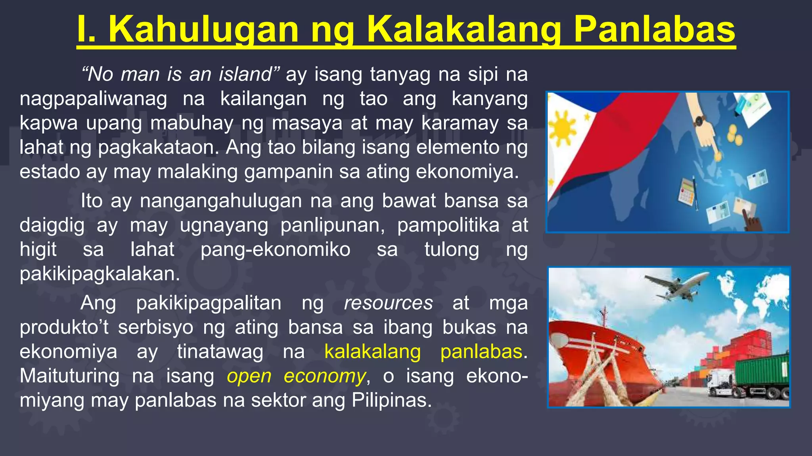
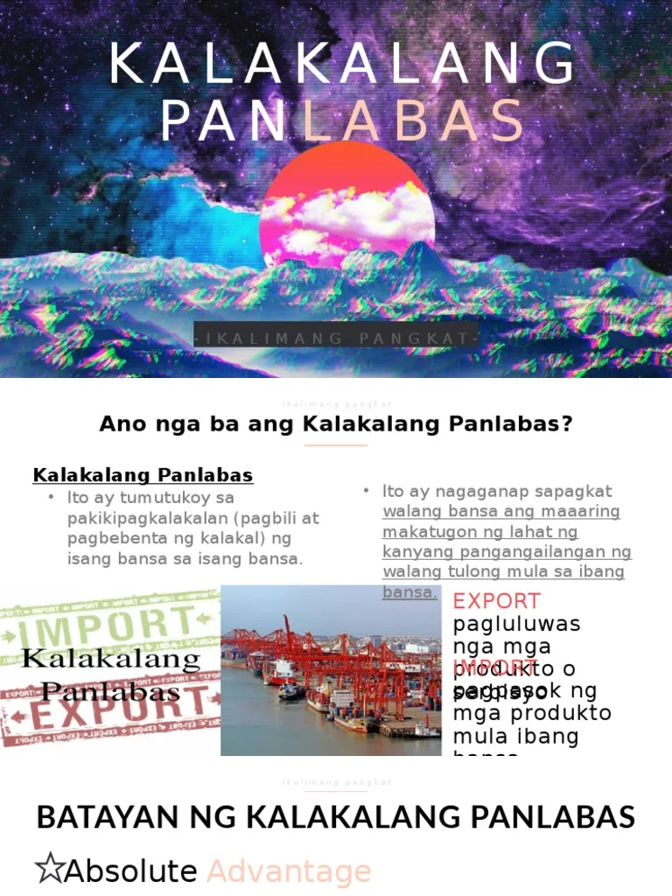
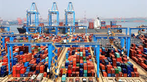

Ang kalakalang panlabas ay tumutukoy sa palitan ng produkto at serbisyo sa pagitan ng iba't ibang bansa.
Nagaganap ito sapagkat walang bansa ang kayang matugunan ang lahat ng pangangailangan nito nang walang tulong mula sa ibang bansa.
Eksport (Pagluluwas) – Pagpapadala ng produkto o serbisyo sa ibang bansa.
Import (Pag-aangkat) – Pagbili ng kalakal mula sa ibang bansa.
Buwis na ipinapataw sa mga produktong inaangkat mula sa ibang bansa. Nagpapataas ito ng presyo ng imported na produkto.
Paglilimita sa dami ng produktong maaaring ipasok o iluwas ng isang bansa.
Tulong pinansyal mula sa pamahalaan upang mapababa ang gastos sa produksyon ng mga lokal na produkto.
Kapag ang isang bansa ay nakakalikha ng mas maraming produkto gamit ang mas kaunting salik ng produksyon kumpara sa ibang bansa.
Ang bansa ay nagkakaroon ng espesyalisasyon sa paglikha ng kalakal na mas mahusay nitong nagagawa kumpara sa ibang bansa.
Halimbawa: Ang Cebu ay may comparative advantage sa paggawa ng lechon.
Tumutukoy sa kalagayan ng kabayaran sa pagitan ng export at import.
Itinatag noong Enero 1, 1995 upang pamahalaan ang pandaigdigang sistema ng kalakalan.
Itinatag noong Nobyembre 1989 upang paunlarin ang ekonomiya sa Asia-Pacific region.
Itinatag noong Agosto 8, 1967 upang palakasin ang ugnayang pang-ekonomiya ng mga bansa sa Timog-Silangang Asya.
Nabuo ang ASEAN Free Trade Area (AFTA) noong Enero 28, 1992 upang alisin ang taripa at quota sa kalakalan.